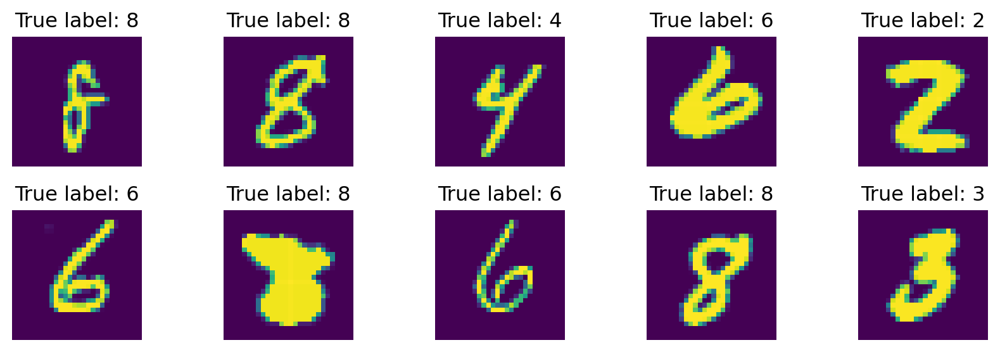

import numpy as np
import pandas as pd
import kagglehub
# Download latest version
path = kagglehub.dataset_download("johnsmith88/heart-disease-dataset")
data = pd.read_csv(path + "/heart.csv")
data.head(5)Objective
This practical session (TP) is designed to help you apply the concepts and techniques you have learned about Logistic Regression.
The
notebookof thisTPcan be downloaded here: TP2_Logistic_Regression.
1. Binary Logistic Regression
Let’s us begin by exploring the Heart Disease Dataset.
| age | sex | cp | trestbps | chol | fbs | restecg | thalach | exang | oldpeak | slope | ca | thal | target | |
|---|---|---|---|---|---|---|---|---|---|---|---|---|---|---|
| 0 | 52 | 1 | 0 | 125 | 212 | 0 | 1 | 168 | 0 | 1.0 | 2 | 2 | 3 | 0 |
| 1 | 53 | 1 | 0 | 140 | 203 | 1 | 0 | 155 | 1 | 3.1 | 0 | 0 | 3 | 0 |
| 2 | 70 | 1 | 0 | 145 | 174 | 0 | 1 | 125 | 1 | 2.6 | 0 | 0 | 3 | 0 |
| 3 | 61 | 1 | 0 | 148 | 203 | 0 | 1 | 161 | 0 | 0.0 | 2 | 1 | 3 | 0 |
| 4 | 62 | 0 | 0 | 138 | 294 | 1 | 1 | 106 | 0 | 1.9 | 1 | 3 | 2 | 0 |
A. General view of the dataset.
- Load the dataset into jupyter notebook.
- What’s the dimension of the dataset?
- How many qualitative and quantitative variables are there in this dataset (answer this question carefully! Some qualitative variables may be encoded using numerical values)?
- Convert variables into their suitable data type if there are any inconsistent variable types.
import numpy as np
import pandas as pd
import kagglehub
# To doB. Univariate Analysis.
- Compute summary statistics and visualize the distribution of the target and the inputs according to their types.
- Are there any missing values? Duplicate data? Outliers?
- Address or handle the above problems.
# To doC. Bivariate Analysis.
- Compute Pearson’s correlation matrix of quantitative variables. Make some remarks on the correlation matrix.
- Compute Spearman’s correlation matrix of quantitative variables. Make some remarks on this correlation matrix.
- Visualize the relationship between each input to the target.
# To doRemark: You should try to understand the differences between these two types of correlation as they are helpful in guiding you to the correct transformation of inputs for model development. At the end of this step, you should have strong intuition on the most impactful inputs for building the model and how can to handle the inputs before building models.
D. Building Logistic Regression Models
- Split the data into \(80\%-20\%\) training and testing data.
from sklearn.model_selection import train_test_split
X_train, X_test, y_train, y_test = train_test_split(data, target, test_size=0.2, stratify=target, random_state=42)- Build a logistic regression model on the training data then compute its performance on the test data using suitable metrics.
- Comment your finding.
- Try to study logistic regression using polynomial features. Compute its formance on the test data and compare to the previous result.
- Apply regularization methods and evaluate their performances on the test data.
E. Try what you have done on Spam dataset.
path = "https://raw.githubusercontent.com/hassothea/MLcourses/main/data/spam.txt"
data = pd.read_csv(path, sep=" ")
data.head(5)| Id | make | address | all | num3d | our | over | remove | internet | order | ... | charSemicolon | charRoundbracket | charSquarebracket | charExclamation | charDollar | charHash | capitalAve | capitalLong | capitalTotal | type | |
|---|---|---|---|---|---|---|---|---|---|---|---|---|---|---|---|---|---|---|---|---|---|
| 0 | 1 | 0.00 | 0.64 | 0.64 | 0.0 | 0.32 | 0.00 | 0.00 | 0.00 | 0.00 | ... | 0.00 | 0.000 | 0.0 | 0.778 | 0.000 | 0.000 | 3.756 | 61 | 278 | spam |
| 1 | 2 | 0.21 | 0.28 | 0.50 | 0.0 | 0.14 | 0.28 | 0.21 | 0.07 | 0.00 | ... | 0.00 | 0.132 | 0.0 | 0.372 | 0.180 | 0.048 | 5.114 | 101 | 1028 | spam |
| 2 | 3 | 0.06 | 0.00 | 0.71 | 0.0 | 1.23 | 0.19 | 0.19 | 0.12 | 0.64 | ... | 0.01 | 0.143 | 0.0 | 0.276 | 0.184 | 0.010 | 9.821 | 485 | 2259 | spam |
| 3 | 4 | 0.00 | 0.00 | 0.00 | 0.0 | 0.63 | 0.00 | 0.31 | 0.63 | 0.31 | ... | 0.00 | 0.137 | 0.0 | 0.137 | 0.000 | 0.000 | 3.537 | 40 | 191 | spam |
| 4 | 5 | 0.00 | 0.00 | 0.00 | 0.0 | 0.63 | 0.00 | 0.31 | 0.63 | 0.31 | ... | 0.00 | 0.135 | 0.0 | 0.135 | 0.000 | 0.000 | 3.537 | 40 | 191 | spam |
5 rows × 59 columns
2. Multiple Logistic Regression
In this section, you will work with Mnist dataset. It can be imported using the following codes.
from keras.datasets import mnist
(train_images, train_labels), (test_images, test_labels) = mnist.load_data()
import matplotlib.pyplot as plt
import numpy as np
digit = np.random.choice(train_images.shape[0], size=10)
_ , axs = plt.subplots(2,5, figsize=(9, 3))
for i in range(10):
axs[i//5, i%5].imshow(train_images[digit[i]])
axs[i//5, i%5].axis("off")
axs[i//5, i%5].set_title(f"True label: {train_labels[digit[i]]}")
plt.tight_layout()
plt.show()
- Build Multinomial Logistic Regressoin to recognize images of testing digits of this dataset.
- Evaluate its performance using suitable matrix and conclude.
# To doReferences
\(^{\text{📚}}\) Chapter 4, Introduction to Statistical Learning with R, James et al. (2021)..
\(^{\text{📚}}\) Chapter 2, The Elements of Statistical Learning, Hastie et al. (2008)..
\(^{\text{📚}}\) Friedman (1989).
\(^{\text{📚}}\) Heart Disease Dataset.
\(^{\text{📚}}\) Different Type of Correlation Metrics Used by Data Scientists, Ashray.